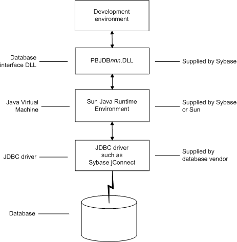

You can access a wide variety of databases through JDBC in PowerBuilder. This section describes what you need to know to use JDBC connections to access your data in PowerBuilder.
Java Database Connectivity (JDBC) is a standard application programming interface (API) that allows a Java application to access any database that supports Structured Query Language (SQL) as its standard data access language.
The JDBC API includes classes for common SQL database activities that allow you to open connections to databases, execute SQL commands, and process results. Consequently, Java programs have the capability to use the familiar SQL programming model of issuing SQL statements and processing the resulting data. The JDBC classes are included in Java 1.1+ and Java 2 as the java.sql package.
The JDBC API defines the following:
JDBC API implementations fall into two broad categories: those that communicate with an existing ODBC driver (a JDBC-ODBC bridge) and those that communicate with a native database API (a JDBC driver that converts JDBC calls into the communications protocol used by the specific database vendor). The PowerBuilder implementation of the JDBC interface can be used to connect to any database for which a JDBC-compliant driver exists.
A Java Virtual Machine (JVM) is required to interpret and execute the bytecode of a Java program. The PowerBuilder JDB interface supports the Sun Java Runtime Environment (JRE) versions 1.2 and later.
You can use the JDBC interface to develop several types of components and/or applications in PowerBuilder:
In PowerBuilder when you access a database through the JDBC interface, your connection goes through several layers before reaching the database. It is important to understand that each layer represents a separate component of the connection, and that each component might come from a different vendor.
Because JDBC is a standard API, PowerBuilder uses the same interface to access every JDBC-compliant database driver.
Figure 3-1 shows the general components of a JDBC connection.

PowerBuilder provides the pbjdb105.dll. This DLL runs with the Sun Java Runtime Environment (JRE) versions 1.1 and later.
PowerBuilder includes a small package of Java classes that gives the JDBC interface the level of error-checking and efficiency (SQLException catching) found in other PowerBuilder interfaces. The package is called pbjdbc12105.jar and is found in Sybase\Shared\PowerBuilder.
The Java Virtual Machine (JVM) is a component of Java development software. When you install PowerBuilder, the Sun Java Development Kit (JDK), including the Java Runtime Environment (JRE), is installed on your system in Sybase\Shared\PowerBuilder. For PowerBuilder 10.5, JDK 1.4 is installed. This version of the JVM is started when you use a JDBC connection or any other process that requires a JVM and is used throughout the PowerBuilder session.
If you need to use a different JVM, see the instructions in "Preparing to use the JDBC interface". For more information about how the JVM is started, see the chapter on deploying your application in Application Techniques .
The JDBC interface can communicate with any JDBC-compliant driver including Sybase jConnect™ for JDBC and the Oracle and IBM Informix JDBC drivers. These drivers are native-protocol, all-Java drivers—that is, they convert JDBC calls into the SQL syntax supported by the databases.
Using the ODBC interface, PowerBuilder can connect, save, and retrieve data in both ANSI/DBCS and Unicode databases but does not convert data between Unicode and ANSI/DBCS. When character data or command text is sent to the database, PowerBuilder sends a Unicode string. The driver must guarantee that the data is saved as Unicode data correctly. When PowerBuilder retrieves character data, it assumes the data is Unicode.
A Unicode database is a database whose character set is set to a Unicode format, such as UTF-8, UTF-16, UCS-2, or UCS-4. All data must be in Unicode format, and any data saved to the database must be converted to Unicode data implicitly or explicitly.
A database that uses ANSI (or DBCS) as its character set might use special datatypes to store Unicode data. Columns with these datatypes can store only Unicode data. Any data saved into such a column must be converted to Unicode explicitly. This conversion must be handled by the database server or client.
When you access data through the PowerBuilder JDBC interface, PowerBuilder uses an internal registry to maintain definitions of SQL syntax, DBMS-specific function calls, and default DBParm parameter settings for the back-end DBMS. This internal registry currently includes subentries for Adaptive Server Anywhere, Adaptive Server Enterprise, and Oracle databases.
In most cases you do not need to modify the JDBC entries. However, if you do need to customize the existing entries or add new entries, you can make changes to the system registry by editing the registry directly or executing a registry file. Changes you introduce in the system registry override the PowerBuilder internal registry entries. See the egreg.txt file in Sybase\Shared\PowerBuilder for an example of a registry file you could execute to change entry settings.
The PowerBuilder JDBC interface uses the pbjdb105.dll to access a database through a JDBC driver.
To use the JDBC interface to access the jConnect driver, use jConnect Version 4.2 or higher or jConnect Version 5.2 or higher. For information on jConnect, see your Sybase documentation.
To use the JDBC interface to access the Oracle JDBC driver, use Oracle 8 JDBC driver Version 8.0.4 or higher. For information on the Oracle JDBC driver, see your Oracle documentation.
Like ODBC, the JDBC interface compiles, sorts, presents, and uses a list of datatypes that are native to the back-end database to emulate as much as possible the behavior of a native interface.